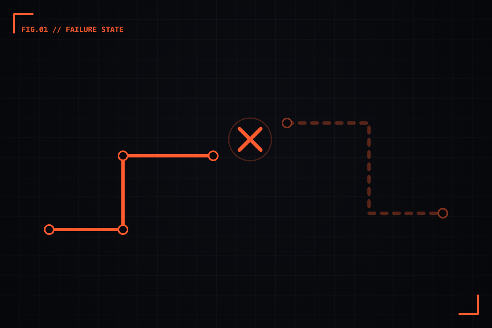

Designing for the unhappy path.
Empty states, errors, the spinner that never ends — the screens nobody demos are the ones that decide whether people trust your product.


Every product demo follows the same script. A clean account, perfect data, a confident click-through where nothing ever goes wrong. We call it the happy path, and we spend most of our time there because it's the version that sells.
But nobody actually lives on the happy path. Real users arrive with empty accounts, flaky connections, expired sessions, and a payment that just got declined for reasons the bank won't explain. The moment a product meets reality, it spends most of its time on what we politely call the unhappy path — and that's exactly where we tend to design the least.
I've come to believe the unhappy path isn't an edge case. It's the product. The happy path tells people what you intended; the unhappy path tells them whether they can rely on you when it counts.
01 / The screens nobody demosFailure is a feature, not a footnote
Think about the last time you trusted a piece of software. I'd bet it wasn't because the onboarding was slick. It was a moment when something went wrong — a failed upload, a lost connection — and the product caught you. It told you exactly what happened, why, and what to do next. No blame, no dead end.
That kind of moment doesn't happen by accident. It happens because someone decided, early, that the error state deserved the same care as the hero screen. On the logistics products I've worked on, a driver losing signal mid-delivery isn't a rare event — it's Tuesday. If the app panics, the driver panics, and the operation grinds. So the "offline" state stopped being a footnote and became one of the most designed screens in the whole flow.
The happy path earns you a first impression. The unhappy path earns you a second visit. — a thing I keep telling myself
02 / A working vocabularyThe four failures worth designing
When I audit a flow now, I look for four specific moments. They cover most of what actually breaks:
- Empty — there's nothing here yet. A new account, a cleared inbox, a search with no results. This is an opportunity disguised as a void.
- Loading — something is happening, but the user can't see it. The gap between action and result is where trust quietly leaks.
- Error — something broke. The question is whether the user feels informed or accused.
- Edge — the long names, the 10,000-row table, the timezone that doesn't exist. The places where your tidy layout meets messy reality.
None of these are exciting to design. None of them show up in the launch announcement. All of them decide whether someone comes back.
03 / The craftWhat a good failure state actually does
A well-designed unhappy path does three things, in order. It tells you what happened in plain language — not "Error 0x80004005," but "We couldn't save your changes." It tells you why, if it can — "your session expired." And it hands you a way forward — a retry, a fallback, a clear next step that doesn't require a support ticket.
Miss any one of those and the state fails its own job. "Something went wrong" with no recovery is just a more polite dead end. The hardest part is usually the tone: an error message is written when the user is already frustrated, so every word carries more weight than it would anywhere else in the product.
Write your error copy out loud, in the voice of a calm colleague standing next to the user. If it sounds like a server talking, rewrite it. People forgive products that fail honestly far more than products that fail silently.
04 / Making the caseHow to get failure on the roadmap
The honest obstacle isn't skill — it's prioritisation. Unhappy-path work is invisible when it's done well, which makes it a hard sell against a shiny new feature. The reframe that's worked for me: stop calling it error handling and start calling it trust infrastructure. Pull the support tickets. Count how many are really just a missing empty state or an unhelpful error. Put a number on the churn hiding inside "the app felt broken."
Then design those screens with the same intent you'd give the homepage. Give them a place in the design system. Review them in the same critique. Because the truth I keep relearning is simple: users don't remember the flow that worked. They remember the moment it didn't — and what you did about it.
So the next time you're polishing a happy path, ask the uncomfortable question: what does this look like when it breaks? The answer is where the real product lives.